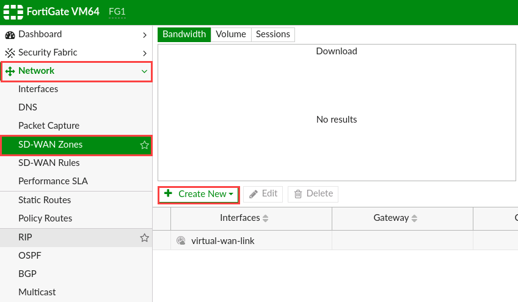

I had a recent implementation to connect two sites over two private links using Fortinet Fortigates. The implementation was one where some traffic needs to go one one link, while the other traffic goes on the other. But I also wanted to have the traffic failover to the other link if either link fails.
Added to that, I needed all the traffic encrypted when going over the WAN.
Note that these are private layer 2 (bridged) links, and not Internet or layer 3 (routed) links.
There were a few more requirements, but for this lab, we’ll go with this.
Lab setup
This is the lab setup.
-
Device1 <–> Device3 ==> VPN1/WAN1
-
Device2 <–> Device4 ==> VPN2/WAN2
I’m using FortiOS v6.4.9. I know that there are other features in v7, but we currently using v6.4.9.
I’m running everything on VMWare Workstation 16 on Ubuntu 20.04.
These are the interfaces on FG1.

These are the interfaces on FG2.

Configure SD-WAN Zone and Members
First go to Network –> SD-WAN Zones.
I’ll go ahead and use the virtual-wan-link SD-WAN zone rather than creating a different zone, because v6.4.9 doesn’t differentiate with the zones. If you use v7, you can do that.

Click on “Create New” and the “SD-WAN Member”.

In the “Edit SD-WAN Member” page, click the drop-down to choose the interface and click on the “+VPN” button.

We’ll start with VPN1 tunnel. Give the VPN Tunnel a name and enter the “Remote IP address” as the WAN1 IP of the peer gateway. Choose the outgoing interface, in this case WAN1, and enter a pre-shared key.
Click “Next”.
Review your settings and click “Finish”.
The VPN will not come up yet as we’ve not configured the other side.
Click “Close”.

Select the newly created VPN tunnel as the Interface.

There’s only one SD-WAN zone, so select it. And set the “Gateway” as the IP of the peer gateway.
Note, if this was an Internet or L3 link, then you’d use the gateway router IP as the gateway.
Click “OK”.

You’ll see the new SD-WAN member created. In this case, it’s not up yet.

Repeat for the second VPN tunnel. In this case, the Gateway and peer IP address is the IP on WAN2, which is the outgoing interface.

Repeat this process for the peer router, with the only difference being that the peer gateway IPs are the other firewall’s.

Create Static Routes
Next, go to “Network” –> “Static Routes” and click “Create New”.

Add a static route for the far-end network, and set the interface as “SD-WAN”. Then click “OK”.

Repeat the process to add a static route on the peer-gateway for its far-end network.
Create Firewall Policies
Go to “Policy & Objects” –> “Firewall Policy” and click on “Create New” to create a new policy.
Give the policy a name. Set the “Incoming Interface” as the LAN interface, and the “Outgoing Interface” as the “virtual-wan-link”.
Set the source as the LAN network of the firewall, and the destination as the far-end network (LAN of the peer gateway).
Disable NAT, which is required for this.
Click “OK”.
Right-Click on the newly created rule and select “Clone Reverse”, which creates a reversed copy of the rule, so the source and destinations are switched.
Your rulebase should look like this.

Repeat the process on the peer gateway.
Create Performance SLAs
Now let’s setup the performance SLAs.
Go to “Network” –> “Performance SLA”. Click “Create New”.
Give the performance SLA a name and enter an IP on the far end to ping. In this case, I’m using the LAN interface of the peer firewall. Set the participants as both VPN tunnels.
Click “OK”.

This is how the new performance SLA looks.

Repeat the process on the next firewall, but this time set the server as the IP address of the next firewall’s LAN interface, or a server on that LAN.

Create SD-WAN Rules
Now go to “Network” –> “SD-WAN Rules”.
Double-click on the implicit rule to edit.
Choose a routing algorithm that you want to use for default traffic - traffic that is not matched by any SD-WAN rules.
- Source IP - load balance traffic based on the source IP of the packets. Sessions with the same source IP will use the same link.
- Sessions - load balance by the number of sessions established through an interface.
- Spillover - traffic through a link is passed onto another link only if the bandwidth utilisation exceeds a certain set value.
- Source-Destination IP - load balance traffic based on source-destination pairs. Sessions with the same source-destination pair will use the same link.
- Volume - load balance traffic based on the bandwidth utilisation and is allocated based on what is configured.
In my case, I’m going to use Volume and distribute the traffic equally.
Click “OK”.
Now, let’s create a new SD-WAN rule. Click on “Create New”.

Give the rule a name. Add the source and destination addresses. In this case, I have the source and Device1 and destination as Device3.
Because I want this device pair’s traffic to go over the VPN1 tunnel, I set the outgoing interface strategy as “Manual”. I select VPN1 as the first interface, and VPN2 as the second.
Then click OK.
Then add the rule for the second pair of devices and set the interfaces with VPN2 first, then VPN1.
Click OK.

This is what the “SD-WAN Rules” look like.

Repeat the process on the peer gateway on the next side reversing the source and destination.

All done
At this point, the setup is complete. Perform tests by pinging each side and checking if the rules hit accordingly.
“Fail” a link and verify that traffic fails over to the other link. Restore the link to see traffic go back to the main link.
I verified traffic using VMWare’s built-in vmnet-sniffer application:
sudo /usr/bin/vmnet-sniffer -e /dev/vmnet8
Where /dev/vmnet8 is one of the WAN links. Note that you’ll only see encrypted traffic, so I sent pings with a certain size to help identify the link it’s going on.
Some other notes
VPN Tunnel Interface IPs
The tunnel interface IP when using the wizard to create the VPN is set as 0.0.0.0/0.0.0.0. Some tutorials I saw online stated to set these IPs; however, my setup works fine without doing that. I even tried it with physical hardware appliances, and they functioned just as well.
Perhaps it’s a best practice to set the IP addresses, so hopefully someone can tell me.
Tunnel Phase 2 Selectors
When you use the VPN wizard, the Phase 2 selectors are set as “all”. The tutorials I found also set these. However this works fine in my setup as “all”.
From what I see, you would only specify these networks if this was a link over the Internet, or if there was some traffic that you didn’t want to encrypt.
To do this, go to “VPN” –> “IPsec Tunnels”.
Double-click on the tunnel to edit. Click on the pencil icon next to the “Phase 2 Selectors”.
Click the dropdown to select the networks to allow. If you don’t see the networks that you want to add, go to “Policy & Objects” –> “Addresses” to create them, then return to this page to add them.
Remember “Local” is the LAN network of the current firewall, and remote is the LAN of the peer gateway.
Click on the checkmark to confirm the selections. Then click “OK” to save.
Repeat the process on the peer gateway at the other end, reversing the selector choices for local and remote.
Set Source Interface for SD-WAN Members
One of the tutorials I read stated to set the source interface of the SD-WAN members as the internal interface of the firewall. This makes sense when the Tunnel Phase 2 selectors are set, as the SLA pings are sent out as the IP address of the outgoing interface, and will fail if that IP is not included in the selectors.
Setting the source IP as one within the Tunnel Selector will ensure that the source of the SLA pings are sent via the tunnel and not denied. Especially if you’re monitoring the VPN tunnels.
This could only be done via the command-line interface, which you can access by clicking on the CLI icon at the top right-hand corner of the Web GUI.

At the command line, type:
config system sdwan
then:
config members
At the (members) prompt, type:
show full-configuration
You will get a display like:
FG1 (members) # show full
config members
edit 1
set interface "FG1-FG2-WAN1"
set zone "virtual-wan-link"
set gateway 10.0.1.2
set source 0.0.0.0
set gateway6 ::
set source6 ::
set cost 0
set priority 0
set volume-ratio 1
set status enable
set comment ''
next
edit 2
set interface "FG1-FG2-WAN2"
set zone "virtual-wan-link"
set gateway 10.0.2.2
set source 0.0.0.0
set gateway6 ::
set source6 ::
set cost 0
set priority 0
set volume-ratio 1
set status enable
set comment ''
next
end
FG1 (members) #
Ensure you have identified the two members to edit. In this case they are 1 and 2. In my case, the config looked like this:
config system sdwan
config members
edit 1
set source 192.168.192.128
next
edit 2
set source 192.168.192.128
next
end
end
Now the performance SLAs should be up.